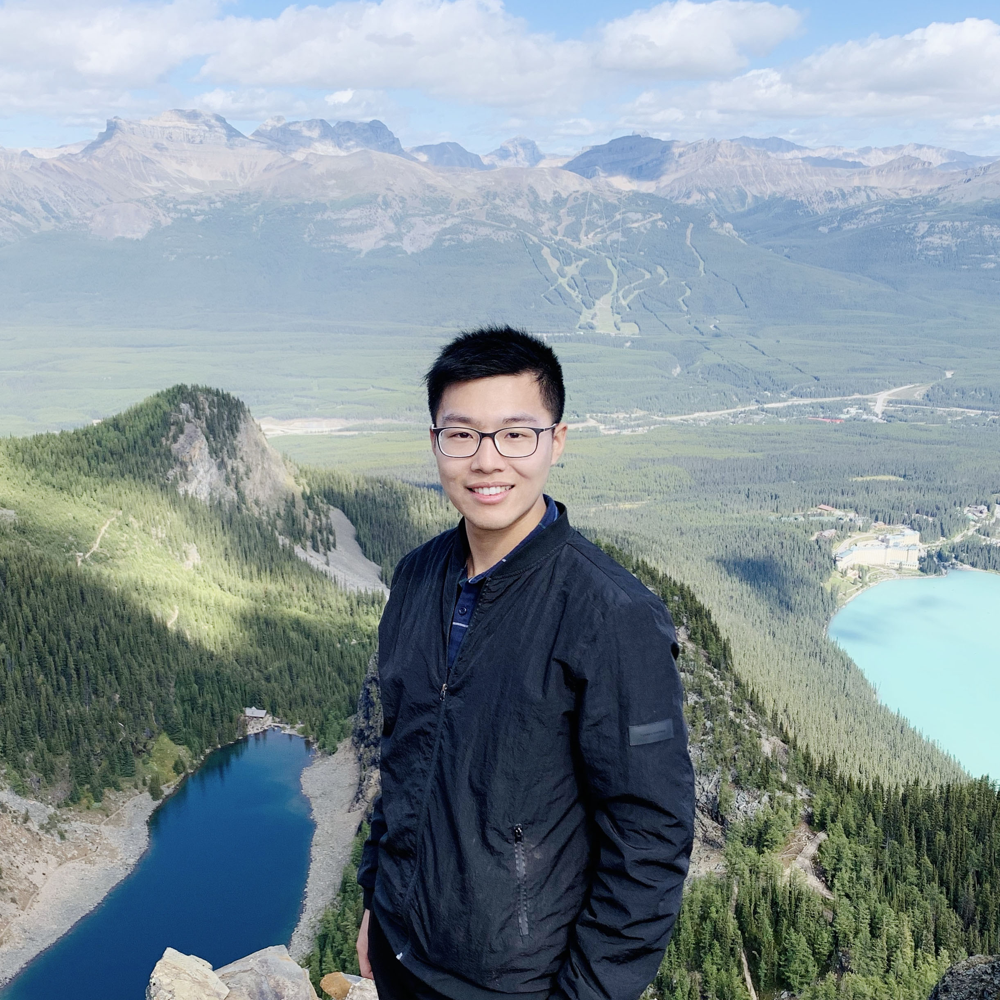

|

|
Hanrui Wang
hanrui AT mit.edu
Hello and Welcome! You can call me "Harry". I am currently a Ph.D. Student at MIT, advised by Prof. Song Han.
Previously, I received my Bachelor from Fudan University. During my undergrad, I was fortunate to work with Prof. Jason Cong, Prof. C.-J. Richard Shi, Prof. Xiaoyang Zeng and Prof. Yibo Fan.
I am interested in the intersection of Computer Architecture and Efficient Machine Learning.
GitHub /
Google Scholar /
LinkedIn /
Twitter /
YouTube
|
News
-
June. 2020. I received DAC Young Fellowship.
-
May. 2020. HAT is open-sourced!.
-
Apr. 2020. "MicroNet for Efficient Language Modeling" accepted to Journal of Machine Learning Research 2020.
-
Apr. 2020. "HAT: Hardware-Aware Transformers for Efficient Natural Language Processing" accepted to ACL 2020.
-
Mar. 2020. "APQ: Joint Search for Network Architecture, Pruning and Quantization Policy" accepted to CVPR 2020.
-
Feb. 2020. I gave a talk at Qualcomm Research Center on "GCN-RL Circuit Designer: Transferable Transistor Sizing With Graph Neural Networks and Reinforcement Learning".
-
Feb. 2020. I gave a talk in HPCA 2020 on "SpArch: Efficient Architecture for Sparse Matrix Multiplication".
-
Feb. 2020. "GCN-RL Circuit Designer: Transferable Transistor Sizing with Graph Neural Networks and Reinforcement Learning" accepted to DAC 2020.
-
Dec. 2020. I gave a talk on Efficient Langauge Modeling at NeurIPS 2019 MicroNet Challenge.
-
Nov. 2019. "SpArch: Efficient Architecture for Sparse Matrix Multiplication" accepted to HPCA 2020.
-
Nov. 2019. I won the NeurIPS 2019 MicroNet Challenge, code open-sourced.
|
Publications[Full List]
HAT: Hardware-Aware Transformers for Efficient Natural Language Processing
Hanrui Wang, Zhanghao Wu, Zhijian Liu, Han Cai, Ligeng Zhu, Chuang Gan, Song Han
Annual Conference of the Association for Computational Linguistics (ACL), 2020.
Paper /
Slides /
Video /
Code /
Project Page
GCN-RL Circuit Designer: Transferable Transistor Sizing With Graph Neural Networks and Reinforcement Learning
Hanrui Wang, Kuan Wang, Jiacheng Yang, Linxiao Shen, Nan Sun, Hae-Seung Lee, Song Han
Design Automation Conference (DAC), 2020.
Paper /
Slides /
Video /
Project Page
SpArch: Efficient Architecture for Sparse Matrix Multiplication
Zhekai Zhang*, Hanrui Wang* , Song Han, William J. Dally (*Equal Contributions)
International Symposium on High-Performance Computer Architecture (HPCA), 2020
Paper /
2-min Intro /
Intro /
Talk /
Slides /
Project Page
MicroNet for Efficient Language Modeling
Zhongxia Yan, Hanrui Wang, Demi Guo, Song Han
Journal of Machine Learning Research, 2020.
Paper /
Talk (Starts from 26:17) /
Code /
Project Page
Park: An Open Platform for Learning-Augmented Computer Systems
Hongzi Mao, Parimarjan Negi, Akshay Narayan, Hanrui Wang, Jiacheng Yang, Haonan Wang, Ryan Marcus, ravichandra addanki, Mehrdad Khani Shirkoohi, Songtao He, Vikram Nathan, Frank Cangialosi, Shaileshh, Venkatakrishnan, Wei-Hung Weng, Song Han, Tim Kraska, Mohammad Alizadeh
Advances in Neural Information Processing Systems (NeurIPS), 2019
Paper /
Code
APQ: Joint Search for Network Architecture, Pruning and Quantization Policy
Tianzhe Wang, Kuan Wang, Han Cai, Ji Lin, Zhijian Liu, Hanrui Wang, Yujun Lin, Song Han
Conference on Computer Vision and Pattern Recognition (CVPR), 2020.
Paper
Learning to Design Circuits
Hanrui Wang*, Jiacheng Yang*, Hae-Seung Lee, Song Han (*Equal Contributions)
Advances in Neural Information Processing Systems (NeurIPS) Workshop on ML for Systems, 2018
Paper /
Project Page
AMC: AutoML for Model Compression and Acceleration on Mobile Devices
Yihui He*, Ji Lin*, Zhijian Liu, Hanrui Wang, Li-Jia Li, Song Han (*Equal Contributions)
The European Conference on Computer Vision (ECCV), 2018
Paper /
Code /
Models /
Project Page
Understanding Performance Differences of FPGAs and GPUs
Jason Cong, Zhenman Fang, Michael Lo, Hanrui Wang, Jingxian Xu, Shaochong Zhang (Alphabetical Order)
International Symposium On Field-Programmable Custom Computing Machines (FCCM), 2018
Paper
|